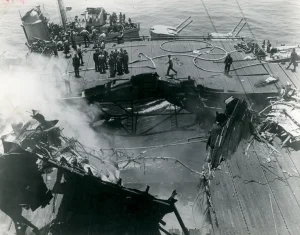

Kamikaze
Kamikaze, İkinci Dünya Savaşı’nda genellikle gemiler olmak üzere düşman hedeflerine kasıtlı olarak intihar amaçlı çarpışmalar yapan Japon pilotlardan herhangi biri. Terim aynı zamanda bu tür saldırılarda kullanılan uçakları da ifade etmektedir. Bu uygulama en çok Ekim 1944’teki Leyte Körfezi Muharebesi’nden savaşın sonuna kadar yaygındı.
{kind=link}

İki Japon kamikaze pilotunun saldırısının ardından USS Bunker Hill’in güvertesinde meydana gelen hasarın görünümü, Haziran 1945.
Kamikaze kelimesi “ilahi rüzgar” anlamına gelmektedir ve 1281 yılında Japonya’yı batıdan tehdit eden bir Moğol istila filosunu tesadüfen dağıtan bir tayfuna atıfta bulunmaktadır. Kamikaze uçaklarının çoğu sıradan avcı uçakları ya da hafif bombardıman uçaklarıydı ve genellikle hedeflerine çarpmak üzere kasten uçurulmadan önce bomba ve ekstra benzin tanklarıyla yüklenirlerdi.
Kamikaze kullanımı için pilotlu bir füze geliştirildi ve bu füzeye Müttefikler tarafından Japonca aptal anlamına gelen “Baka” takma adı verildi. Füze, onu fırlatacak olan uçağa bağlandıktan sonra pilotun dışarı çıkma imkânı yoktu. Genellikle 25,000 feet (7,500 metre) yükseklikten ve hedefinden 50 milden (80 km) daha yüksekten bırakılan füze, pilot üç roket motorunu çalıştırmadan önce hedefinden yaklaşık 3 mil (5 km) uzaklığa kadar süzülür ve son dalışında aracı saatte 600 milden (saatte 960 km) daha fazla hızlandırırdı. Burun kısmına yerleştirilen patlayıcı yükün ağırlığı bir tondan fazlaydı.
Kamikaze saldırıları savaş sırasında 34 gemiyi batırmış ve yüzlercesine de hasar vermiştir. Okinawa’da, ABD Donanması’nın tek bir muharebede verdiği en büyük kayıpları verdiler ve yaklaşık 5,000 kişiyi öldürdüler. Genellikle kamikaze saldırılarına karşı en başarılı savunma, büyük gemilerin etrafına gözcü muhripler yerleştirmek ve muhriplerin uçaksavar bataryalarını büyük gemilere yaklaşan kamikazelere karşı yönlendirmekti.